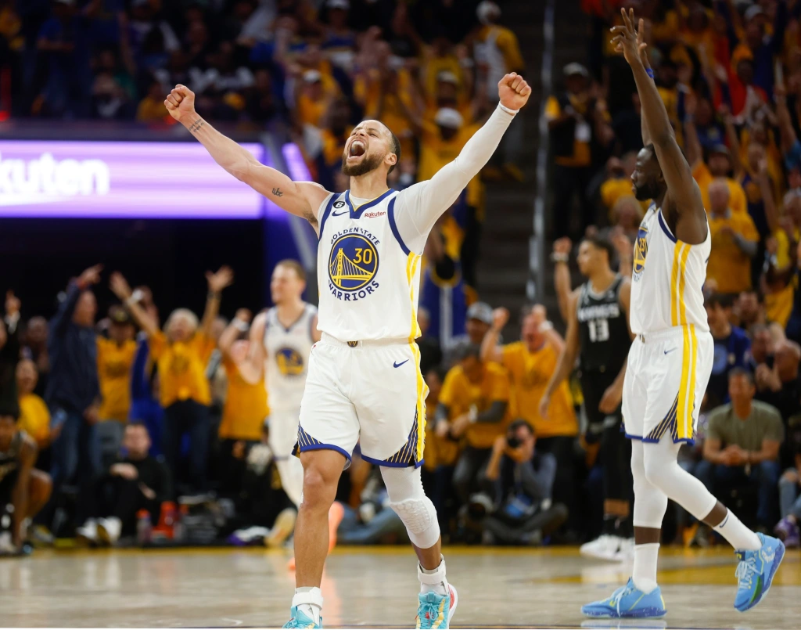
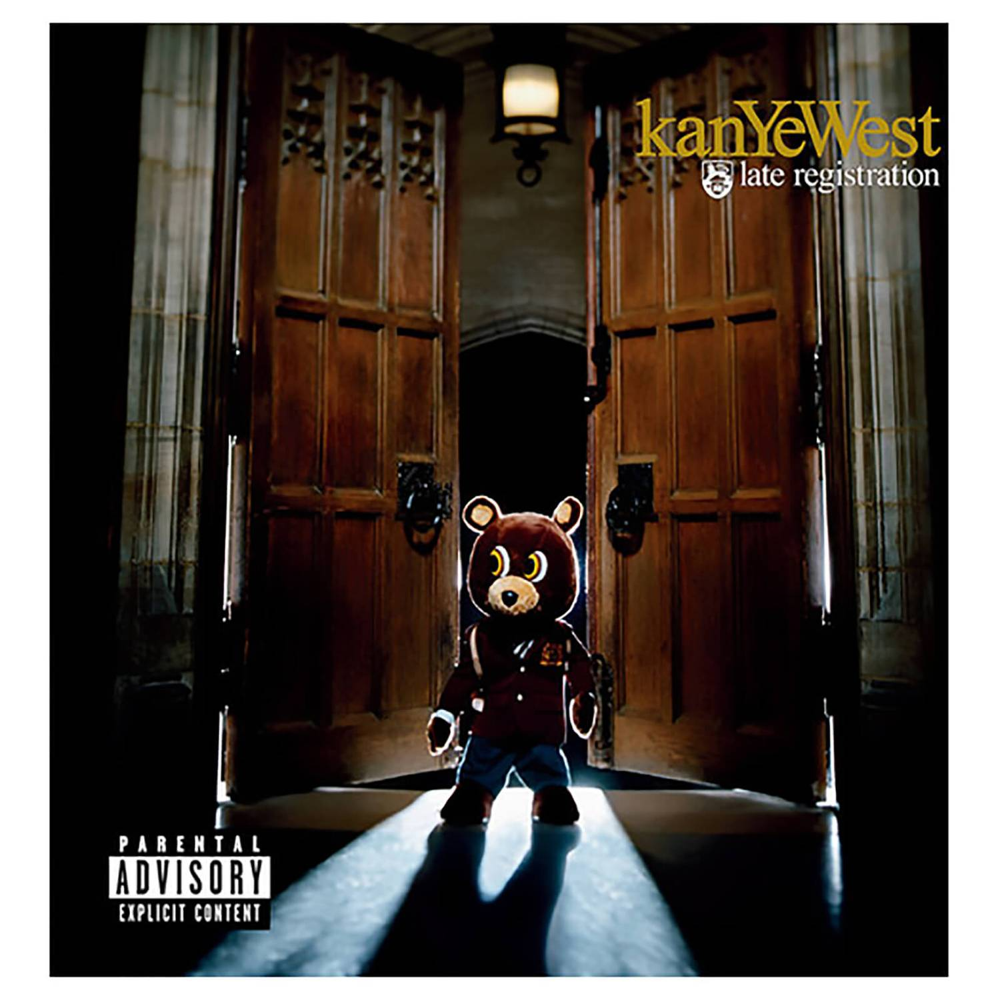

Liangpi, or spicy cold chinese noodles, is a dish usually prepared during the hot summer weather. It is very tasty and I always feel happier after eating it. Here are the ingredients to make it yourself:
Here is a recipe
I play the acoustic guitar (I have an electric one as well) eventhough I am not great at music theory or any of that stuff. I just enjoy and play music that I like rather than forcing myself to learn music theory. To me, playing guitar is a very soothing and relaxing time of my day where I can completely remove myself from outside distractions.

YOASOBI is a japanese band consisting of just two people, Ayase who is the producer and Ikura who is the singer. Their slogan is "novel to music" meaning most of their songs are based off of short stories. I found YOASOBI in grade 8 and I really enjoyed their music from the start. Their best song by far is "Racing Into the Night" which is inspired by "Thanatos no Yuwaku," a short story created by Mayo Hoshino.

I love Stephen Curry since he inspired me to play basketball at a young age. If you don't know him, he is the greatest shooter of all time and he has won multiple championships. He currently playes on the Golden State Warriors and I always cheer for them throughout each season. When I get older and can afford it, I really want to fly our my Dad and I and watch one of their games since he also enjoys watching basketball.

"Late Registration" is a album produced by Kanye West. I recently began listening to his music and out of all the albums, Late Registration is by far my favourite album. Here are some of my favourite songs from the album (1 being my favourite) with their respective spotify links: